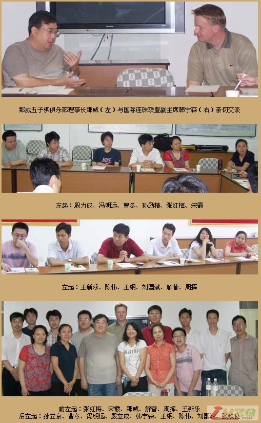

北京召开五子棋发展研讨会
#1 北京召开五子棋发展研讨会 作者：有志青年 发表时间：2007-7-10 6:55:27
（北京消息 通讯员：黄敬英）7月8日，北京五子棋界和其他在京的五子棋界部分知名人士假座那威五子棋俱乐部，对五子棋的发展，特别是北京五子棋的进一步务实发展进行了讨论。与会人士对五子棋在新时期的发展充满信心。大家一致认为，当前五子棋发展的首要工作是，务实，即，努力推动市场运作，相信只要脚踏实地，五子棋一定会度过跌停期，走出低谷，越来越好，再次迎来发展的高潮。
国际连珠联盟副主席韩宁森也出席了会议。
